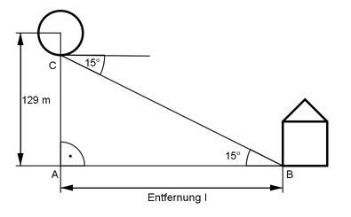

Aufgabe 66 Ein Ballon befindet sich in einer Höhe von 129 m. Von dort wird ein Haus unter einem Winkel von 15° anvisiert. Wie weit ist das Haus entfernt?

Im Dreieck ABC: 129 m tan 15° = --------- |*l l l * tan 15° = 129 m |:tan 15° 129 m 129 m l = --------- = ---------- = 481,5 m tan 15° 0,2679